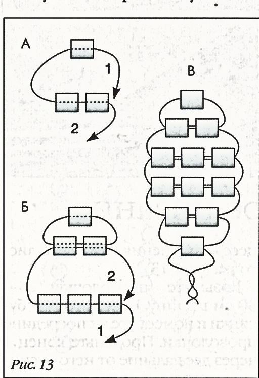
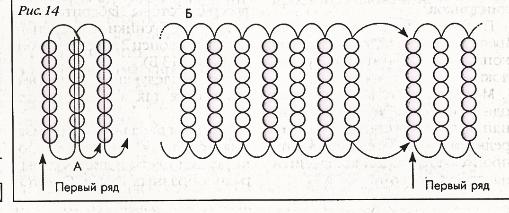

ЛАБОРАТОРНО-ПРАКТИЧНА РОБОТА
Тема: «Паралельне нанизування. Виготовлення об’ємних прикрас»
Мета: засвоєння техніки паралельного нанизування, формування вміння виготовляти об’ємні прикраси, формувати естетичний смак, виховувати повагу та любов до традицій українського народу.
Матеріали та інструменти: бісер різного розміру та кольору, капронові нитки, голки для бісеру.
Порядок виконання роботи:
- Ознайомитись з теоретичними відомостями роботи.
- Виконати завдання практичної роботи.
Теоретичні відомості:
Паралельне нанизування найчастіше використовують для виготовлення квітів, листя, браслетів, сувенірів у вигляді фігурок різних тварин. Для паралельного нанизування годиться будь-який матеріал, але краще всього використовувати рубаний бісер, що має форму коротких циліндриків.
Паралельне нанизування виконують двома кінцями однієї нитки або дроту.
Метод полягає в тому, що на один кінець нитки (дроту) нанизують намистинки для чергового ряду. Потім через них пропускають другий кінець нитки назустріч першому.
Для прикладу розглянемо виконання овального листочка (мал. 29).

Мал. 29. Овальний листочок.
Візьміть нитку 25-30 см довжини. Наберіть три намистинки і помістіть їх посередині нитки. Протягніть кінець 1 через дві дальні від нього намистинки назустріч кінцю 2 (мал. 29, а). Натягніть нитку – два перших ряди готові. Наберіть на кінець 1 три намистинки і протягніть через них кінець 2 назустріч кінцю 1.
Всі наступні ряди виконуються так само, як третій (мал. 29, в).
Методом паралельного нанизування, використовуючи тонкий дріт, роблять квіти і листя найрізноманітніших форм. Розміри пелюсток і листя визначаються кількістю рядів у схемах та їх довжиною. Квіти і листочки можна помістити в рамку, повісити на стіну, а можна поставити у вазу або зібрати в букетик і закріпити на одязі. Звичай прикрашати одяг і зачіску маленьким букетиками з живих або штучних квітів – бутоньєрками – прийшов до нас із стародавніх часів. Бутоньєрка може складатися як з однакових квітів, так і з поєднання різних за кольором, формою і розмірами квітів, бутонів, ягід.
Незважаючи на згадану простоту, метод паралельного нанизування дозволяє створювати цікаві прикраси складної форми, забавні фігурки тварин.
Практична частина
Виконання вправ паралельного нанизування.
Методом паралельного нанизування на волосінь виконують об’ємні браслети. Вони виходять пружними, легко розтягуються і не потребують застібки. Для браслетів годиться рибальська волосінь діаметром від 0,15 до 0,25 мм. При виготовленні браслетів дуже сильно натягуйте волосінь. У цьому випадку ряди вигинаються в дyгy і кожна пара рядів утворює овал. Парні ряди лягають над парними і складають одну сторону браслета. Непарні ряди лягають над непарними – це інша сторона браслета.
Матеріал: 10 г світло-рожевого і 10 г темно-рожевого кольорового бісеру № 9/0, волосінь.
Це двосторонній браслет: одна його сторона світла, а інша – темна. Можна вибрати відповідний колір в залежності від наряду, просто вивернувши браслет.
Наберіть на волосінь 7 світло-рожевих і 7 темно-рожевих бісеринок. Розташуйте їх посередині волосіні. Пропустіть кінець волосіні через 7 світлих бісеринок в прямому напрямку. Наберіть на волосінь 7 темних бісеринок і пропустіть через них інший кінець назустріч першому (мал. 30, а). При виконанні цього і наступних рядів сильно натягуйте волосінь. Продовжуйте низати браслет двома кінцями волосіні, чергуючи темні і світлі ряди. Коли потрібна вам довжина браслета буде досягнута (останнім повинен бути світлий ряд), джгут що вийшов згорніть у кільце і пропустіть обидва кінці волосіні назустріч один одному через сім бісеринок першого ряду. Решту кінчиків закріпіть, заправте і відріжте.

Мал. 30. Техніка нанизування браслету «Зиг-заг».
Контрольні питання:
- В чому полягає метод паралельного нанизування?
- Які матеріали використовують для техніки паралельного нанизування?
- В чому полягає особливість створення об’ємних виробів.